WHY GO
その土地の味8軒
その土地まで行かないと成り立たない店。水や素材、その土地のやり方に理由がある。
-
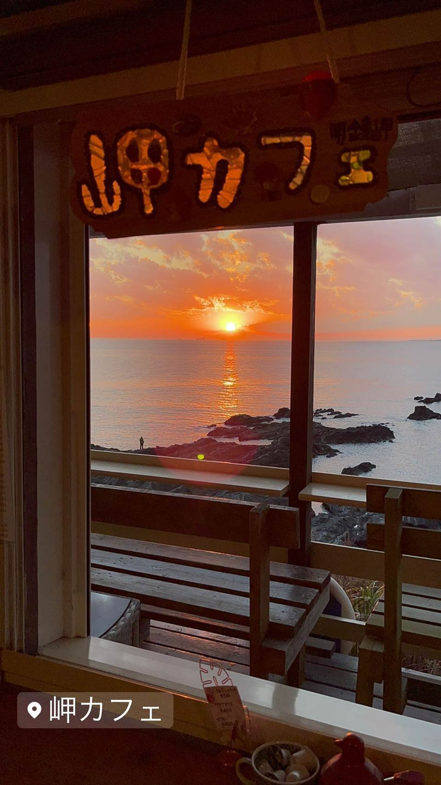
★ コーヒー 保田駅 音楽と珈琲の店 岬 鋸山の湧き水でコーヒーを淹れ、その水は店の外に持ち出せない 昼 ～¥999 -
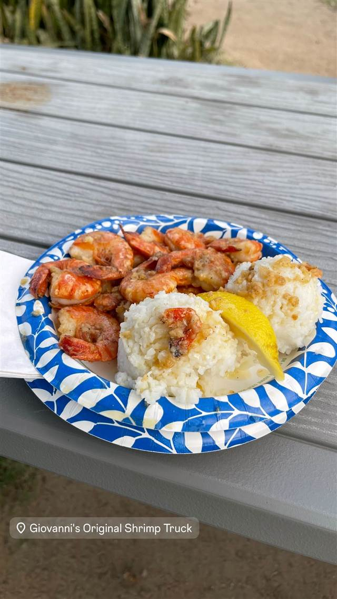
ハワイ Kahuku Giovanni's Original Shrimp Truck (Kahuku店) カフクスタイルのガーリックシュリンプを広めた元祖の屋台 -
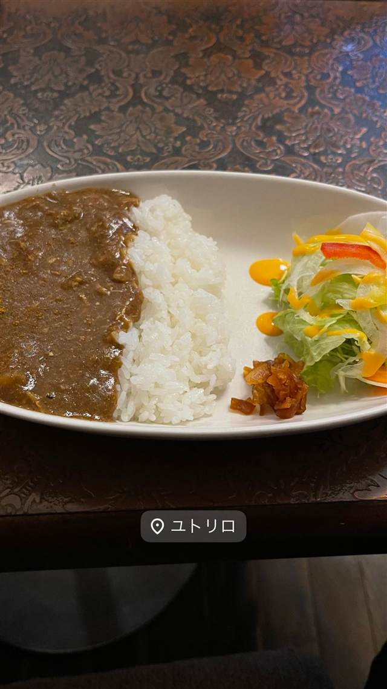
カレー 箱根湯本駅 画廊喫茶ユトリロ 築70年のお茶屋を画廊喫茶に改装し、箱根の湧き水でコーヒーを淹れる 昼 ¥1,000～¥1,999 -
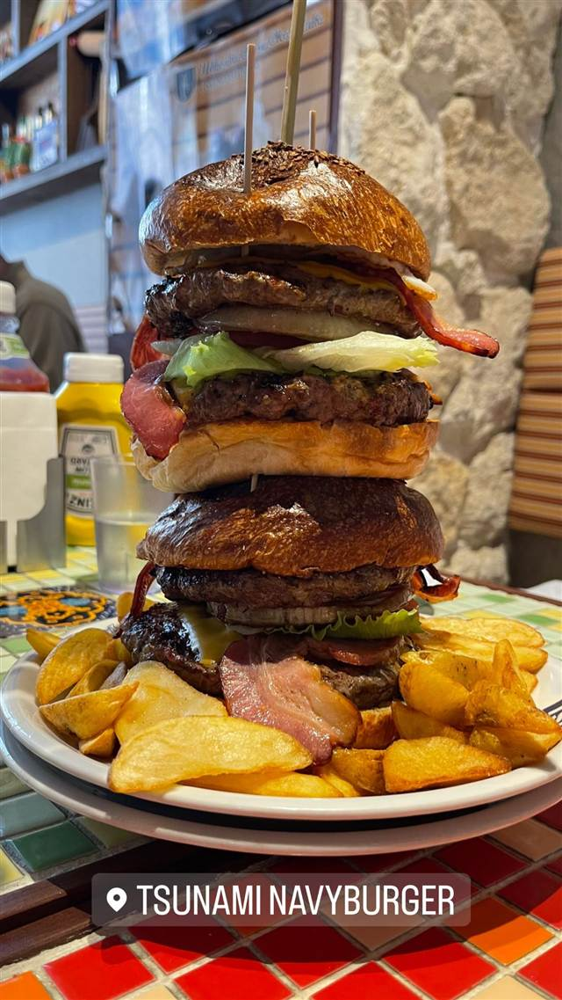
ハンバーガー 京急・JR横須賀中央駅 TSUNAMI（YOKOSUKA NAVY BURGER） 横須賀基地司令官が市に贈ったレシピを最初に売り出した4店の一軒 昼 ¥1,000～¥1,999 夜 ¥1,000～¥1,999 -
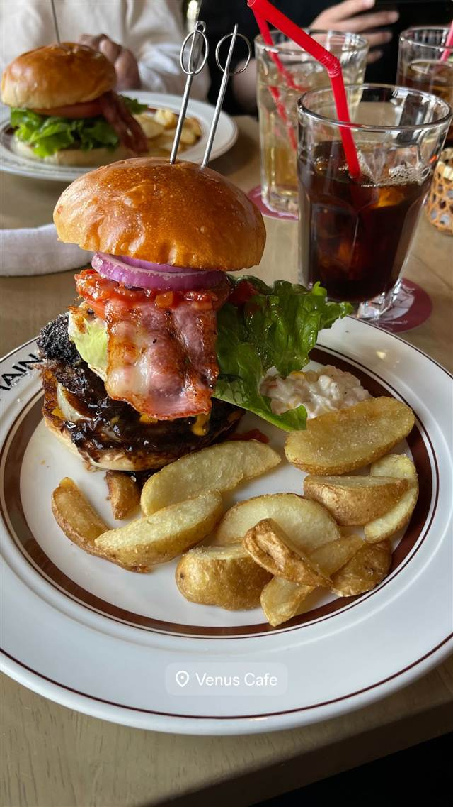
ハンバーガー 江ノ電長谷駅 Venus Cafe（ヴィーナスカフェ） 1955年創業、映画のモデルとなった海を望むテラス席が今も残る老舗カフェ 昼 ¥2,000～¥2,999 夜 ¥2,000～¥2,999 -
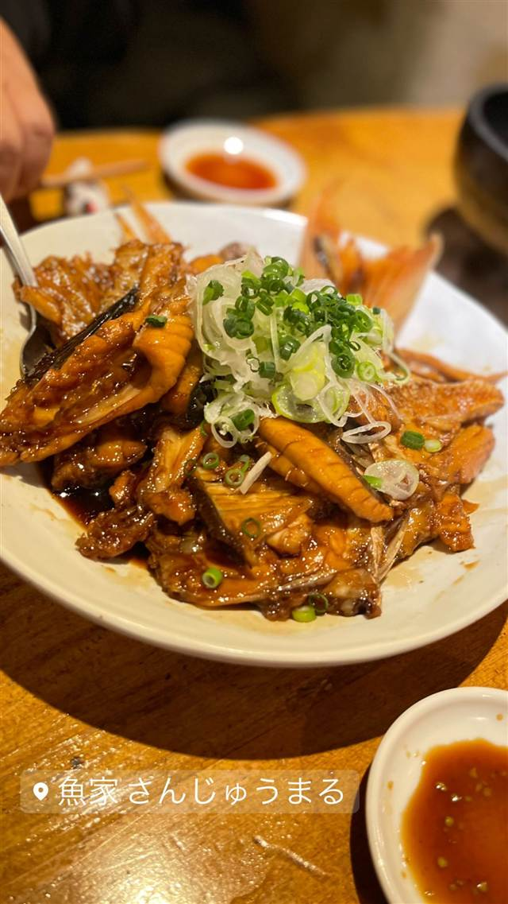
海鮮居酒屋 三軒茶屋 魚屋 さんじゅうまる 銚子港から自社便で直送する地魚だけを刺身や郷土料理で提供する 夜 ¥3,000～¥3,999 -
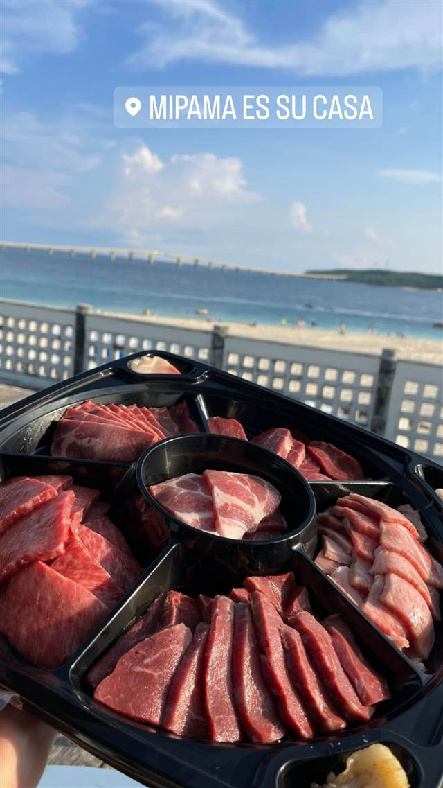
焼肉 与那覇前浜ビーチ MIPAMA ES SU CASA(マイパマ エス カーサ) トリップアドバイザー世界1位のビーチ内で唯一営業するBBQ施設 夜 ¥3,000～¥3,999 -
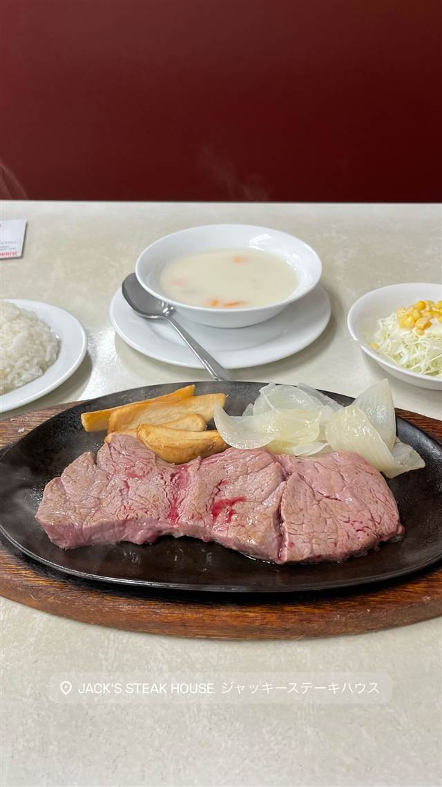
ステーキ ゆいレール旭橋駅 西口 徒歩6分 ジャッキー ステーキハウス(JACK'S STEAK HOUSE) 1953年米軍統治下の沖縄で創業し70年以上変わらぬ味を守り続ける 夜 ¥2,000～¥2,999
同じ理由だが、線の外にした店
理由は同じでも「わざわざ出かけてでも」とは言い切れなかった店。記録としては残している。
-
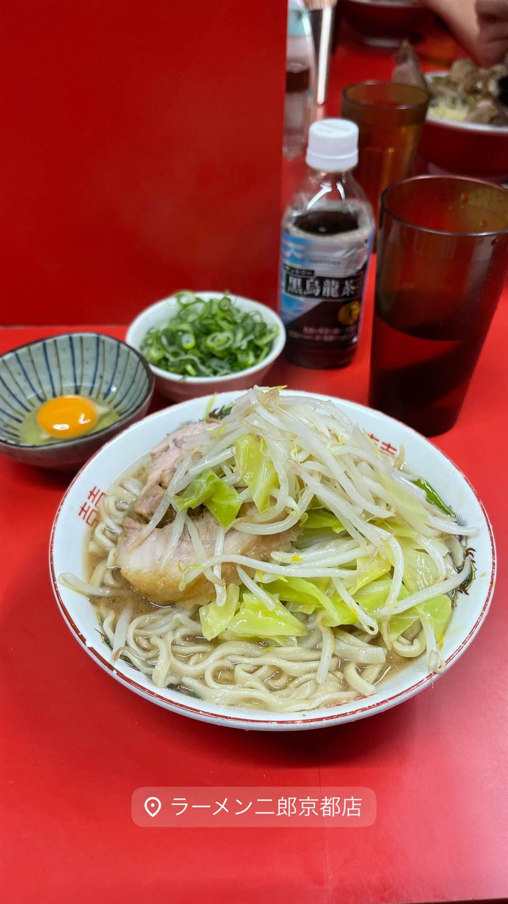
★ 二郎系(直系) 元田中駅 ラーメン二郎 京都店 関西唯一の二郎直系店で、九条ねぎを添える京都仕様のスープを出す 昼 ～¥999 夜 ～¥999 -
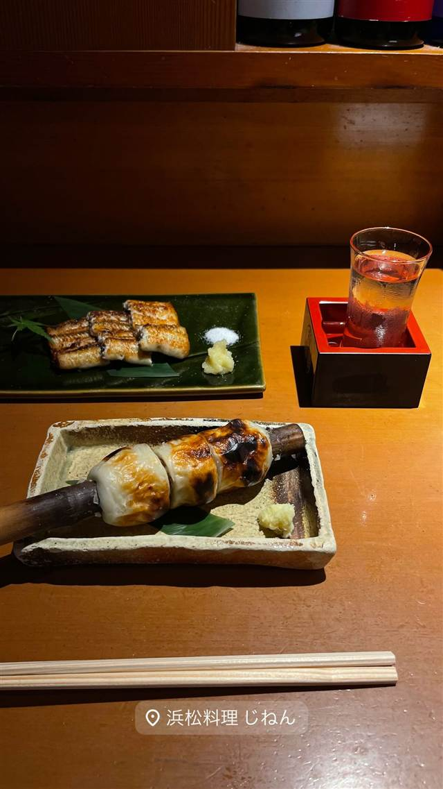
うなぎ・天ぷら 浜松駅 酒肴遊善 じねん(浜松料理じねん) 舞阪漁港と浜名湖から毎日直接仕入れる魚介とうなぎで浜松料理を提供する 夜 ¥10,000～¥14,999 -
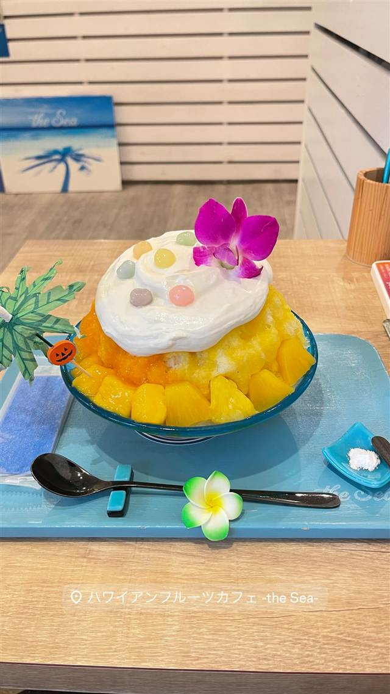
ハワイ 牧志駅 ハワイアンフルーツカフェ -the Sea- 久米島の海洋深層水を極薄の氷に削り海を食べるかき氷に仕立てる 昼 ¥1,000～¥1,999 夜 ¥1,000～¥1,999 -
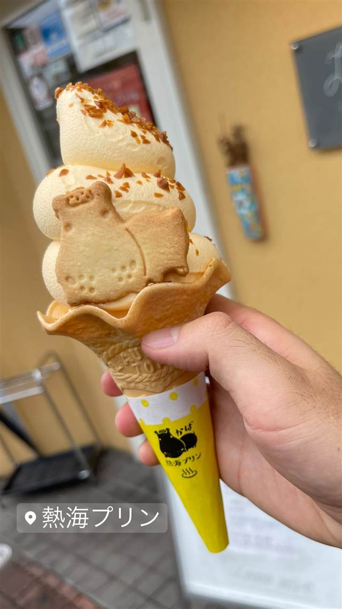
アイス・ジェラート 熱海駅 熱海プリン（本店） 熱海温泉の源泉水を使いじっくり蒸し上げる土地由来のプリン 昼 ～¥999 夜 ～¥999 -
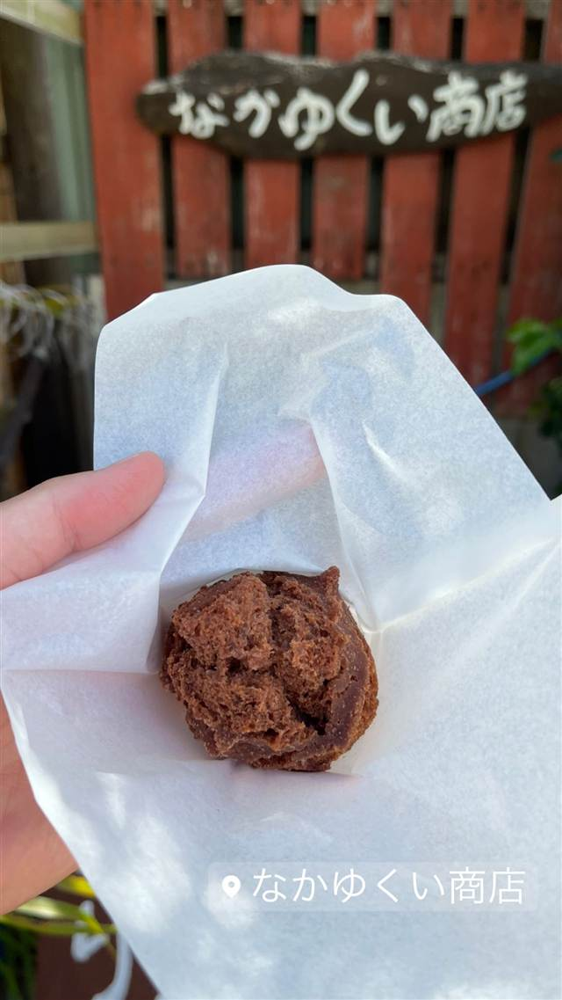
スイーツ 国仲 なかゆくい商店 揚げたてのさたぱんびんに冷たいアイスをのせる伊良部島の郷土スイーツ 昼 ～¥999 夜 ～¥999 -
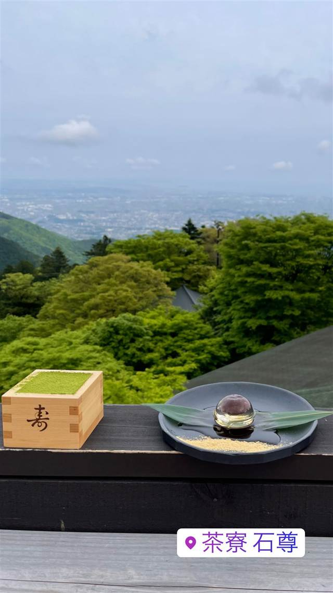
和菓子 大山ケーブル駅 茶寮 石尊 大山阿夫利神社境内の御神水を使い標高700mの絶景テラスで味わう 昼 ¥1,000～¥1,999 夜 ¥1,000～¥1,999